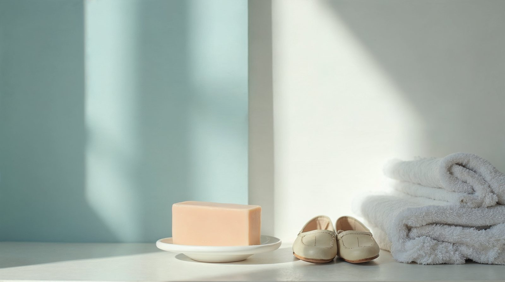
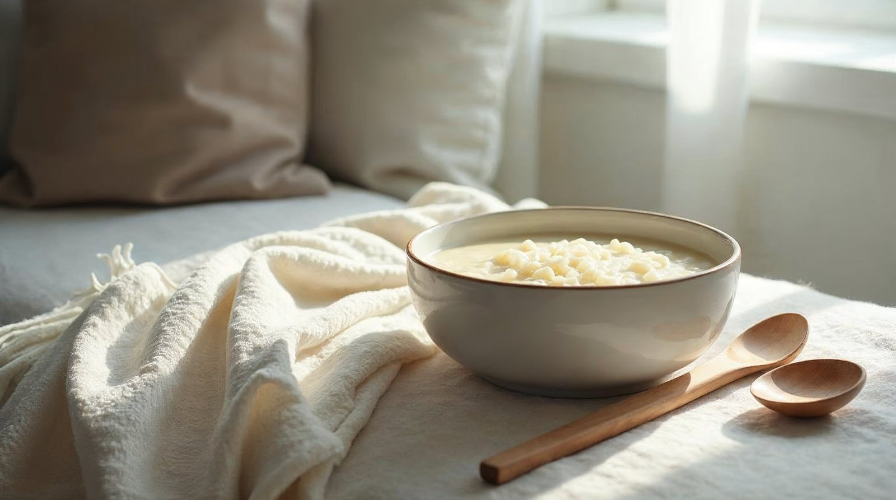
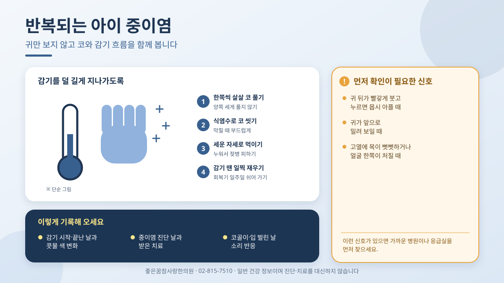

이종호 한의사 감수좋은꿈참사랑한의원 대표원장 (한의사 면허번호 19769)발행 2026-11-26 · 수정 2026-11-26
이 글의 차례
새벽 두 시, 아이가 갑자기 울면서 깹니다. 한쪽 귀를 손으로 감싸 쥐고 머리를 베개에 비비며 아프다고 합니다. 이마를 짚어 보니 뜨겁습니다. 며칠 전부터 콧물을 훌쩍이더니 또 귀로 왔구나 싶어 마음이 내려앉습니다.
진료실에서 만나는 부모님들은 올해만 벌써 몇 번째인지 모르겠다는 말씀을 자주 하십니다. 항생제를 먹이고 나면 좀 괜찮다가, 한두 달 뒤 감기가 오면 또 귀가 아프다고 하니 지치실 수밖에 없지요.
중이염은 고막 안쪽 공간에 염증이 생기고 물이 차는 상태입니다. 어린아이에게 특히 흔한데, 그 이유는 코와 귀를 잇는 통로의 모양에 있습니다. 그래서 아이 중이염을 이야기할 때는 귀만이 아니라 코와 목, 그리고 감기에 걸리는 흐름 전체를 함께 봐야 합니다.
저는 중이염 상담에서 귀 치료 이야기보다 감기를 어떻게 지나가는지를 더 많이 여쭙니다. 감기에 얼마나 자주 걸리는지, 코가 얼마나 오래 막히는지, 잠은 잘 자는지가 다음 중이염이 언제 올지를 짐작하게 해 주는 경우가 많기 때문입니다.
중이염은 어떤 모습으로 오나요?
급성 중이염은 감기 기운이 있는 며칠 사이에 귀 통증과 열이 함께 오는 경우가 많습니다. 말을 하는 아이는 귀가 아프다고 하지만, 말을 못 하는 아기는 귀를 자꾸 만지거나 잡아당기고, 밤에 보채며 깨고, 젖이나 우유를 빨다가 울며 멈추기도 합니다.
열과 통증이 가라앉은 뒤에도 고막 안에 물이 남아 있는 경우가 있습니다. 이를 삼출성 중이염이라고 하는데, 아프지는 않지만 귀가 먹먹해 소리에 반응이 늦거나, 텔레비전 소리를 크게 하거나, 불러도 대답을 잘 안 하는 모습으로 드러나기도 합니다.
간혹 고막에 작은 구멍이 나면서 귀에서 고름 같은 물이 흘러나오기도 합니다. 이때는 오히려 통증이 줄어드는 경우가 많지만, 이비인후과에서 귀 상태를 확인받으셔야 합니다.
왜 아이들은 중이염이 잦을까요
귀와 코 뒤쪽은 이관이라는 가는 통로로 이어져 있습니다. 이 통로는 귀 안의 압력을 맞추고 물을 목 쪽으로 빼내는 역할을 합니다. 어른의 이관은 길고 기울어져 있지만, 아이의 이관은 짧고 거의 수평에 가까워 코의 염증이 귀로 넘어가기 쉽습니다.
감기에 걸리면 코 점막이 붓고 콧물이 늘면서 이관 입구도 함께 막힙니다. 귀 안의 물이 빠지지 못하고 고이면, 그곳에 염증이 자리 잡기 쉬워집니다. 그래서 중이염은 대개 감기 끝자락에 찾아옵니다.
코 뒤쪽에 있는 아데노이드가 큰 아이, 어린이집처럼 감기를 자주 주고받는 환경에 있는 아이, 누워서 젖병을 무는 습관이 있는 아기, 집 안에 담배 연기가 있는 경우에도 중이염이 되풀이되기 쉽습니다.
한의학에서는 이런 아이를 두고 코와 목의 막힘, 그리고 감기를 이겨 내는 바탕의 힘을 함께 봅니다. 감기가 오면 열이 쉽게 오르고 코가 오래 막히는 아이, 입이 짧고 쉽게 지쳐 감기 뒤 회복이 더딘 아이는 같은 중이염이라도 살피는 방향이 조금 다릅니다.
다른 귀 불편과는 어떻게 다른가요?
물놀이나 귀 후비기 뒤에 귀 바깥쪽이 아프고, 귓바퀴를 당기거나 귀 앞을 누르면 더 아파한다면 바깥귀에 생기는 외이도염일 수 있습니다. 중이염은 귓바퀴를 건드려도 통증이 크게 변하지 않고, 감기와 함께 오는 경우가 많다는 점이 다릅니다.
이가 나는 시기의 아기도 귀 근처를 자주 만집니다. 목이 아픈 편도염도 귀로 통증이 퍼지는 것처럼 느껴질 수 있습니다. 집에서 구분하기는 어려우니, 귀 통증과 열이 함께 있다면 이비인후과나 소아청소년과에서 고막을 확인받으시는 것이 우선입니다.
반복될 때 병원에서는 무엇을 보나요
일정 기간 안에 중이염이 여러 번 되풀이되거나, 고막 안의 물이 몇 달씩 빠지지 않으면 이비인후과에서 청력 검사를 하고 경과를 지켜보는 기간을 정합니다. 말이 늦어지는지, 소리에 반응하는지도 함께 확인합니다.
물이 오래 차 있고 청력에 영향을 준다고 판단되면 고막에 작은 환기관을 넣는 처치를 권하기도 하고, 아데노이드가 크다면 그 부분도 함께 상의합니다. 이런 결정은 귀 안을 직접 보는 이비인후과 선생님과 충분히 이야기 나누고 정하시면 됩니다.
한의원에서는 그 사이의 시간, 즉 아이가 감기를 어떻게 지나가는지와 잠·입맛·코막힘 같은 생활의 흐름을 함께 살핍니다. 병원 치료와 겹치는 것이 아니라 서로 다른 시간을 맡는다고 생각해 주시면 이해가 쉽습니다.
귀가 아프다고 우는 밤에는 어떻게 하나요?
중이염 통증은 누워 있을 때 더 심해지는 경우가 많습니다. 누우면 귀 안의 압력이 달라지고, 밤에는 주의가 통증에 모이기 때문입니다. 큰 아이는 베개를 조금 높여 상체를 살짝 세워 주고, 돌 전 아기는 베개를 괴지 말고 안아서 등을 토닥이며 숨을 고르게 해 주세요.
열이 함께 난다면 옷을 가볍게 하고 물을 조금씩 자주 마시게 해 주세요. 해열진통제는 이전에 소아청소년과에서 안내받은 용량과 간격대로 쓰시고, 다음 날 진료 때 몇 시에 얼마나 먹였는지 알려 주시면 도움이 됩니다.
아이가 아파하는 모습을 밤새 지켜보면 부모님도 함께 마음이 타들어 갑니다. 이런 밤을 몇 번 겪으면 감기 기운만 보여도 걱정이 앞서게 되지요. 그래서 다음 감기가 오기 전, 평소에 할 수 있는 것을 미리 정해 두는 것이 중요합니다.
감기가 귀로 넘어가기 전 며칠이 중요합니다
중이염을 자주 앓는 아이는 감기의 시작 신호가 비슷한 경우가 많습니다. 맑은 콧물이 나오다가 누렇게 바뀌고, 코가 막혀 입으로 숨을 쉬기 시작하고, 밤에 자주 뒤척이는 흐름이지요. 이 흐름을 미리 알아 두면 마음의 준비를 할 수 있습니다.
이 시기에는 코 세척과 충분한 잠, 따뜻한 물 마시기를 평소보다 더 챙겨 주세요. 학원이나 바깥 활동을 하루 이틀 줄이고 일찍 재우는 것만으로도 아이가 감기를 지나가는 모습이 달라지기도 합니다.
콧물 색이 짙어지고 귀를 만지기 시작하면 이비인후과나 소아청소년과 진료를 미루지 마세요. 일찍 확인할수록 치료가 단순해지는 경우가 많고, 부모님도 밤을 덜 불안하게 보내실 수 있습니다. 진료를 받을 때는 감기가 시작된 날과 콧물 색의 변화를 함께 알려 주세요.

어린이집과 집에서 감기를 덜 주고받으려면
어린이집에 다니기 시작한 첫해에는 감기를 달고 사는 아이가 많습니다. 처음 만나는 바이러스가 많기 때문이지요. 이 시기를 지나며 몸이 하나씩 익혀 가는 과정이라고 생각하시면 조금 덜 조급해지실 수 있습니다.
집에 형제가 있다면 한 아이가 감기에 걸렸을 때 수건과 컵을 따로 쓰고, 손 씻기를 가족 모두 함께 해 주세요. 부모님이 감기에 걸린 경우에도 마찬가지입니다. 작은 습관이 집 안에서 감기가 돌고 도는 고리를 줄여 줍니다.
말과 소리 반응도 함께 봐 주세요
고막 안에 물이 오래 차 있는 시기에는 소리가 물속에서 듣는 것처럼 작고 둔하게 들릴 수 있습니다. 아이는 이것을 말로 설명하지 못하니, 부모님이 평소 모습에서 알아채 주셔야 합니다.
등 뒤에서 이름을 불렀을 때 바로 돌아보는지, 작은 소리로 말하면 되묻는 일이 잦아졌는지, 혼자 놀 때 목소리가 커졌는지를 가끔 살펴보세요. 말이 늘어나는 시기의 아이라면 새 단어가 느는 속도도 함께 보시면 좋습니다.
이런 모습이 보이면 다음 이비인후과 진료 때 꼭 말씀해 주세요. 청력 검사를 언제 할지 정하는 데 부모님의 관찰이 큰 도움이 됩니다.
먼저 이렇게 여쭙니다
처음 오시면 대략 이런 순서로 여쭙니다. 미리 생각해 오시면 이야기가 수월해집니다.
- 지난 1년 동안 중이염을 진단받은 횟수와 계절
- 감기에 걸리는 횟수와 한 번 걸리면 코가 막히는 기간
- 받은 치료와 지금 먹는 약, 청력 검사 결과
- 자면서 코를 골거나 입을 벌리고 자는지
- 어린이집이나 학교에 다니기 시작한 시기
- 입맛과 대변, 땀, 잠드는 시각
모든 질문에 정확히 답하지 못하셔도 괜찮습니다. 병원 진료 기록이나 약 봉투 사진만 가져오셔도 이야기의 절반은 시작된 셈입니다.
일상에서 먼저 해 볼 수 있는 것
중이염을 줄이는 일은 결국 코를 덜 막히게 하고 감기를 덜 오래 끄는 일과 이어집니다. 아래 가운데 할 수 있는 것부터 골라 보세요.
- 젖병이나 컵은 누운 자세 말고 상체를 세운 자세로 먹이기
- 코가 막히면 식염수로 부드럽게 씻어 내고, 한쪽씩 살살 풀게 하기
- 집 안 습도를 너무 건조하지 않게, 방은 덥지 않게 두기
- 집과 차 안에서 담배 연기를 멀리하기
- 바깥에서 돌아오면 손 씻기와 양치를 놀이처럼 함께 하기
- 감기 기운이 있을 때는 일찍 재우고 쉬는 시간을 늘리기
코를 풀 때 양쪽을 한꺼번에 세게 풀면 압력이 귀로 전해질 수 있습니다. 한쪽 콧구멍을 막고 다른 쪽을 살살 푸는 방법을 아이와 함께 연습해 두세요.
감기가 지나간 뒤 일주일은 아직 코와 귀가 예민한 시기입니다. 이때 수영장이나 무리한 바깥 활동을 잠시 미루고, 잠과 식사를 평소보다 조금 더 챙겨 주시면 회복이 한결 수월해집니다.
귀가 아프다고 할 때 귀 안에 무엇을 넣거나 면봉으로 닦는 것은 피해 주세요. 귀 바깥에 뜨겁지 않은 따뜻한 수건을 잠깐 대 주면 아이가 편해하기도 하지만, 진물이 흐른다면 그대로 두고 진료를 받으시는 편이 안전합니다.
한의원에서 함께 살필 수 있는 경우
- 감기만 걸리면 코가 오래 막히고 중이염으로 이어지는 경우
- 중이염 치료 뒤에도 코막힘과 입 벌리고 자는 습관이 이어지는 경우
- 감기를 자주 앓고 회복이 더디며 입이 짧은 경우
- 열이 쉽게 오르고 땀이 많으며 잠을 설치는 경우
- 알레르기 비염이 함께 있어 코와 몸 전체를 살피고 싶은 경우
좋은꿈참사랑한의원에서는 맥을 짚으며 감기 흐름과 잠, 입맛, 대변을 보호자와 함께 여쭙고, 진찰한 내용을 바탕으로 집에서 바꿔 볼 것 하나와 지금 아이에게 맞는 방법을 정합니다.
한약을 상의할 때는 아이의 나이와 체중, 지금 먹는 항생제나 다른 약을 모두 확인하고 신중하게 정합니다. 침이 필요하다고 판단되면 보호자와 먼저 상의하고, 아이가 침을 무서워하면 미리 말씀해 주세요. 이비인후과와 소아청소년과 진료는 그대로 이어 가시면서 나란히 살핀다고 생각해 주시면 됩니다.
이렇게 기록해 오시면 상담이 쉬워집니다
중이염은 감기와 짝을 이뤄 오기 때문에, 몇 달의 흐름을 적어 두면 많은 것이 보입니다. 간단한 달력 기록이면 충분합니다.
- 감기가 시작된 날과 끝난 날
- 중이염을 진단받은 날과 받은 치료
- 콧물 색과 코막힘이 이어진 기간
- 자면서 코를 골거나 입을 벌린 날
- 어린이집이나 학교를 쉰 날
- 소리에 반응이 늦거나 텔레비전 소리를 키운 때
빠진 날이 있어도 괜찮습니다. 기록을 나란히 놓고 보면 어떤 계절, 어떤 생활에서 감기와 중이염이 이어지는지 보이기 시작하고, 그것이 다음 걸음을 정하는 실마리가 됩니다.

자라면서 함께 줄여 가는 중이염
아이의 이관은 자라면서 길어지고 기울어집니다. 그래서 대부분의 아이는 초등학교에 들어갈 무렵을 지나며 중이염이 눈에 띄게 줄어듭니다. 지금이 가장 힘든 시기일 수 있다는 것을 기억해 두시면 마음이 조금 가벼워지실 겁니다.
물론 아이마다 속도는 다릅니다. 또래보다 조금 늦게까지 중이염을 앓는 아이도 있고, 한동안 잠잠하다가 큰 감기를 앓은 뒤에 다시 오는 아이도 있습니다. 그럴 때도 지나온 기록을 나란히 놓고 보면 횟수와 기간이 조금씩 달라지는 흐름이 보이기도 합니다.
그때까지는 생활 속에서 감기를 덜 자주, 덜 길게 지나가도록 챙기는 것이 목표입니다. 이번 주에는 한쪽씩 살살 코 푸는 방법 연습 하나만 정해 보세요. 거울 앞에서 놀이처럼 하면 아이도 즐겁게 따라 합니다. 다음에 오시면 그 사이 감기와 코의 기록부터 함께 펼쳐 보겠습니다.
이런 증상은 먼저 확인이 필요합니다
- 귀 뒤쪽이 빨갛게 붓거나, 누르면 몹시 아파하거나, 귀가 앞으로 밀려 보이는 경우
- 고열과 함께 목이 뻣뻣하거나, 아이가 심하게 처지거나, 얼굴 한쪽이 움직이지 않는 경우
이런 신호가 있으면 한의원보다 가까운 병원이나 응급실을 먼저 찾으세요.
함께 읽으면 좋은 글
- 아이가 감기에 자주 걸리고 코가 막힐 때는 어떤 점을 살펴보나요?
- 어린이집에 다니면서 감기를 달고 사는 아이는 어떻게 살피나요?
- 아이가 아침마다 재채기와 맑은 콧물, 코막힘을 달고 사는 알레르기 비염은 어떻게 살피나요?
- 아이가 자면서 코를 골고 입으로 숨 쉴 때는 어떻게 살피나요?
- 편도염이 자꾸 반복될 때, 목이 붓고 열이 나는 일을 줄이려면 무엇을 살피나요?

여쭙는 것
- 지난 1년 동안 중이염을 진단받은 횟수와 계절
- 감기에 걸리는 횟수와 한 번 걸리면 코가 막히는 기간
- 받은 치료와 지금 먹는 약, 청력 검사 결과
생활에서 해 볼 것
- 젖병이나 컵은 누운 자세 말고 상체를 세운 자세로 먹이기
- 코가 막히면 식염수로 부드럽게 씻어 내고, 한쪽씩 살살 풀게 하기
- 집 안 습도를 너무 건조하지 않게, 방은 덥지 않게 두기
한의원에서 함께 살필 것
- 감기만 걸리면 코가 오래 막히고 중이염으로 이어지는 경우
- 중이염 치료 뒤에도 코막힘과 입 벌리고 자는 습관이 이어지는 경우
- 감기를 자주 앓고 회복이 더디며 입이 짧은 경우
먼저 확인이 필요한 신호
- 귀 뒤쪽이 빨갛게 붓거나, 누르면 몹시 아파하거나, 귀가 앞으로 밀려 보이는 경우
- 고열과 함께 목이 뻣뻣하거나, 아이가 심하게 처지거나, 얼굴 한쪽이 움직이지 않는 경우
한눈에 보는 표
| 구분 | 핵심 |
|---|---|
| 여쭙는 것 | 지난 1년 동안 중이염을 진단받은 횟수와 계절 감기에 걸리는 횟수와 한 번 걸리면 코가 막히는 기간 |
| 생활에서 해 볼 것 | 젖병이나 컵은 누운 자세 말고 상체를 세운 자세로 먹이기 코가 막히면 식염수로 부드럽게 씻어 내고, 한쪽씩 살살 풀게 하기 |
| 한의원에서 함께 살필 것 | 감기만 걸리면 코가 오래 막히고 중이염으로 이어지는 경우 중이염 치료 뒤에도 코막힘과 입 벌리고 자는 습관이 이어지는 경우 |
| 먼저 확인이 필요한 신호 | 귀 뒤쪽이 빨갛게 붓거나, 누르면 몹시 아파하거나, 귀가 앞으로 밀려 보이는 경우 고열과 함께 목이 뻣뻣하거나, 아이가 심하게 처지거나, 얼굴 한쪽이 움직이지 않는 경우 |
자주 묻는 질문
중이염 항생제를 먹는 중에 한의원 진료를 받아도 되나요?
함께 받으셔도 됩니다. 항생제는 처방받은 기간을 채우시는 것이 중요하니 그대로 이어 가시고, 먹는 약을 알려 주시면 그에 맞춰 진료 방향을 정합니다.
중이염이 있으면 목욕이나 머리 감기를 피해야 하나요?
고막에 구멍이 났거나 환기관을 넣은 경우가 아니라면 대개 목욕은 괜찮습니다. 귀에 물이 들어가는 것이 걱정되면 이비인후과 선생님께 귀 상태에 맞는 방법을 여쭤보세요.
수영장은 언제부터 다시 가도 되나요?
귀 상태에 따라 다르니 이비인후과에서 고막을 확인받은 뒤 정하시는 것이 좋습니다. 감기가 지나간 직후 일주일 정도는 쉬어 가는 편을 권합니다.
아이도 한약을 먹을 수 있나요?
아이의 나이와 체중, 지금 먹는 약을 모두 확인한 뒤 신중하게 정합니다. 진찰 후 필요하다고 판단될 때 상의하며, 먹기 어려워하면 다른 방법을 함께 찾습니다.
중이염이 자주 오면 청력이 나빠지나요?
고막 안에 물이 오래 차 있으면 그동안 소리가 작게 들릴 수 있습니다. 이비인후과에서 청력 검사로 확인하며 경과를 지켜보시고, 소리에 반응이 늦은 모습이 보이면 알려 주세요.
좋은꿈참사랑한의원은 재진 때 지난번 이야기부터 이어서 여쭙니다. 진료시간과 예약은 오시는 길에서 확인하세요.
어디서 상담받을 수 있나요?
좋은꿈참사랑한의원은 서울 동작구 만양로2길 2 신성빌딩 3층·5층(서울 동작구 상도동, 7호선 상도역 3번 출구 근처)에 있습니다. 한의사 3명(이종호 대표원장, 조영기 수석진료원장, 정원영 진료원장)이 진료합니다. 진료시간은 평일 09:30~20:00(점심 13:00~14:00), 토·일·공휴일 09:30~15:00이며, 방문 전 전화로 확인을 권합니다. 예약은 네이버 예약, 카카오톡 상담, 전화 02-815-7510로 받습니다.
이 글은 일반적인 건강 정보이며 개인의 진단이나 치료를 대신하지 않습니다. 증상이 있거나 복용 중인 약이 있다면 진료를 통해 확인하세요. 치료 효과는 개인마다 다를 수 있습니다.
작성 기준: 일반적으로 알려져 있는 건강 정보를 참고해 정리했습니다(대표원장 감수). 증상 기록은 1~2주 동안 하루 1회, 비슷한 시간에 적어 오시면 지난 상태와 비교하기 쉽습니다.